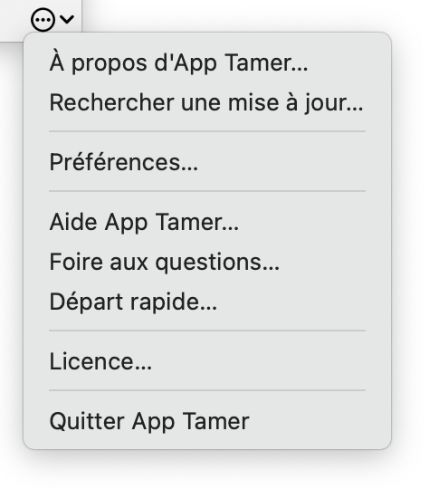

Aide App Tamer
Aide App TamerInformations essentielles
Ce que fait App Tamer
Il y a quelques concepts de base qui vous aideront à comprendre ce que fait App Tamer :
- Vous avez des applications qui utilisent le processeur de votre ordinateur (nous appellerons cela l'utilisation du temps de traitement).
- L'application que vous utilisez à un moment donné est au premier plan, et toutes les autres applications en cours d'exécution sont en arrière-plan.
- Certaines applications, en particulier les navigateurs Web, continuent d'utiliser un temps de traitement même lorsqu'elles sont en arrière-plan. Ce n'est généralement pas ce que vous voulez.
- App Tamer peut mettre ces applications en pause lorsqu'elles sont en arrière-plan afin qu'elles n'utilisent aucun temps de traitement, puis les réveiller lorsque vous les amenez au premier plan.
- Certaines applications ont besoin d'un peu de temps de traitement pour faire les choses même lorsque vous ne les utilisez pas. Dans ces cas, App Tamer peut ralentir les applications sans les suspendre complètement. Cela n'économise pas autant d'énergie, mais peut tout de même réduire considérablement l'utilisation du processeur et de la batterie.
Comment l'utiliser
App Tamer est configurée pour gérer de nombreuses applications courantes, y compris Safari, Mail, Google Chrome, Firefox, Spotlight, Time Machine, Photoshop, Illustrator, Word et autres. Pour économiser du temps de traitement et la batterie lors de l'exécution de ces applications, il suffit de lancer App Tamer et il s'occupera du reste.
Pour les autres applications, utilisez la liste des processus d'App Tamer pour déterminer celles qui gaspillent la puissance de traitement, puis cliquez dessus pour gérer leur utilisation du processeur.

Nous vous suggérons de commencer par faire ce qui suit :
- Lancez App Tamer.
- Lancez les applications que vous exécutez couramment et commencez à les utiliser.
- Une fois que vous avez travaillé quelques minutes, cliquez sur l'icône d’App Tamer dans la barre des menus. Vos applications seront répertoriées par ordre d'utilisation moyenne du processeur dans la fenêtre d'App Tamer (voir l'image à droite).
- En commençant en haut de la liste, décidez laquelle de ces applications vous aimeriez voir gérer lorsqu'elles sont en arrière-plan.
- Cliquez sur une application pour la gérer. Vous verrez un pop-over avec les options décrites dans la section Gestion des applications de ce manuel.
Vous pouvez cliquer sur l'icône d’App Tamer dans votre barre des menus à tout moment pour voir ce qui utilise le temps de traitement sur votre Mac ou pour modifier vos réglages.
Si une application commence à utiliser une quantité excessive de temps de traitement, App Tamer affichera un avertissement et vous demandera ce que vous souhaitez faire. Vous pouvez modifier le temps de traitement nécessaire pour déclencher cet avertissement dans l'onglet Détection de vos préférences App Tamer.
La fenêtre d’App Tamer
La fenêtre d’App Tamer est affichée à droite. Ses principaux contrôles et composants sont :
Commutateur Marche/arrêt
Vous pouvez activer et désactiver la fonctionnalité de gestion des applications d'App Tamer à l'aide de ce commutateur. Lorsque vous désactivez App Tamer, on vous demandera le temps pendant lequel vous souhaitez le désactiver. App Tamer recommencera automatiquement à gérer vos applications après ce délai.
Champ de recherche
La saisie d’une partie du nom d'une application ici filtrera la liste des processus afin que seules les applications correspondantes soient affichées.
Si vous êtes un« geek » et que vous savez ce qu'est un ID de processus, vous pouvez saisir un ID de processus dans le champ de recherche pour afficher un processus spécifique.
Processeur utilisé par les apps
Cela vous indique combien de temps de traitement total est utilisé sur votre Mac, en tenant compte de plusieurs cœurs de processeur. (Donc, sur un MacBook Pro 8 cœurs, un nombre de 100 % signifie que les huit cœurs de processeur sont complètement occupés.)
Cœurs performants et cœurs efficaces
Ces nombres ne sont affichés que sur les Mac qui fonctionnent avec des processeurs Apple Silicon. Ces processeurs ont deux différents types de cœurs de traitement, l'un pour la haute performance et l'autre pour l'efficacité énergétique. L'utilisation de chaque type de cœurs est décrite séparément ici.
Processeurs économisés par App Tamer
Il s'agit d'une estimation du temps de traitement total économisé par App Tamer. Ce n'est qu'une estimation, et elle a tendance à être conservatrice. (App Tamer peut en fait économiser plus, selon les circonstances.)
Graphe de l'utilisation du processeur et des économies
La quantité du temps de processeur utilisée et économisée est affichée graphiquement ici. Déplacer votre pointeur sur le nom d'une application montrera l'utilisation du processeur de cette application dans le graphe au lieu des économies d'App Tamer.
Vous pouvez faire un Contrôle-clic sur le graphe pour passer d'une échelle linéaire à une échelle logarithmique. L'échelle logarithmique est utile sur les machines avec plusieurs coeurs ; elle zoome sur l'extrémité inférieure du graphe où se déroule la majeure partie de l'activité.
Vous pouvez également faire un Contrôle-clic sur le graphique pour le masquer entièrement.
Processus en usage élevé
Cette liste vous montre quels processus et applications utilisent actuellement le plus du processeur et qui peuvent être contrôlés à l'aide d'App Tamer. Elle omet les processus qu'App Tamer ne peut pas contrôler ou ceux qui ne peuvent pas être arrêtés ou ralentit. Le point coloré à côté de chaque application indique si cette application est ralentie ou arrêtée par App Tamer. Les points à moitié remplis montrent les applications qui sont en cours d'exécution, mais qui ont des réglages qui peuvent les ralentir ou les arrêter plus tard.
Notez que les pourcentages du processeur indiqués sont par cœur de processeur, de sorte qu'une application qui utilise 100 % de traitement utilise tous les cœurs. Certaines applications peuvent donc utiliser plus de 100 % si elles divisent leur charge sur plusieurs cœurs du processeur.
En cliquant sur le bouton «Inclure les processus système essentiels…» sous la liste, vous changerez ce qu'elle montre. Il y a deux options :
- Affiche seulement les processus qui utilisent le plus de temps de traitement.
- Affiche tous les processus, y compris ceux qui n'utilisent aucun temps de traitement.
Processus contrôlables

Cette liste vous montre les applications gérées par App Tamer, ainsi qu'une estimation du temps de traitement économisé pour chacune d'elles. Par défaut, la liste affiche simplement celles qui ont le plus de temps de traitement économisé. En cliquant sur le bouton « Afficher tout… » en bas, vous modifierez la liste afin qu'elle affiche toutes les applications gérées.
Comme la liste des processus, les économies sont calculées par cœur de processeur.
Bouton du menu utilitaire
En cliquant sur la petite icône dans le coin inférieur droit de la fenêtre d’App Tamer, le menu utilitaire est affiché à droite. Les éléments du menu sont explicites.
Notez que ce menu est l'endroit où vous trouverez les préférences d'App Tamer, ainsi que la commande Licence où vous entrez votre numéro de série après avoir acheté App Tamer.
Astuces
- Après avoir cliqué sur l'icône d'App Tamer dans la barre des menus pour afficher sa fenêtre, vous pouvez cliquer et faire glisser le bord de la fenêtre pour l'arracher de la barre des menus. Une fois que vous aurez fait cela, il se comportera comme une fenêtre régulière jusqu'à ce que vous la fermiez.
- Vous pouvez cliquer et faire glisser sur la ligne de démarcation entre les listes supérieure et inférieure pour modifier le nombre d'éléments que vous voyez dans chaque liste.